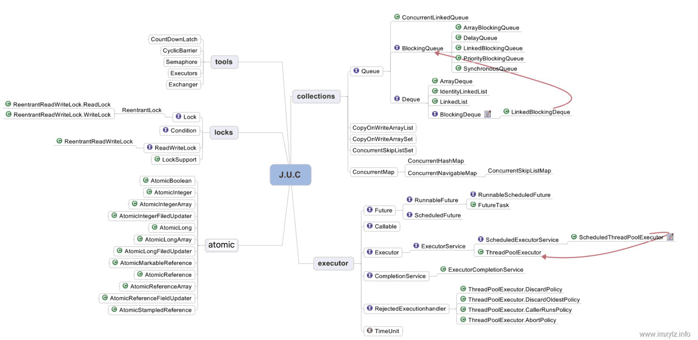

Ch4-Java 之 JUC
April 11, 2017
JUC 即 java.util.concurrent，是 Java 并发编程中很常用的实用工具类。它包含了 Lock 框架，Collections 并发集合，Executors 线程池，Atomic 原子类，Tools。

| JUC | 说明 |
|---|---|
| Lock 框架 | AbstractQueuedSynchronizer, ReentrantLock, ReentrantReadWriteLock |
| Collections 并发集合 | ArrayBlockingQueue, LinkedBlockingQueue, LinkedBlockingDequeue, ConcurrentLinkedQueue, ConcurrentLinkedDequeue, DelayQueue |
| Executors 线程池 | Executors, ThreadPoolExecutor, RejectedExecutionHandler |
| Atomic 原子类 | AtomicInteger, AtomicIntegerArray, AtomicIntegerFieldUpdater, AtomicStampedReference, ... |
| Tools | CyclicBarrier, Semaphore, CountDownLatch, Phaser, Exchanger |